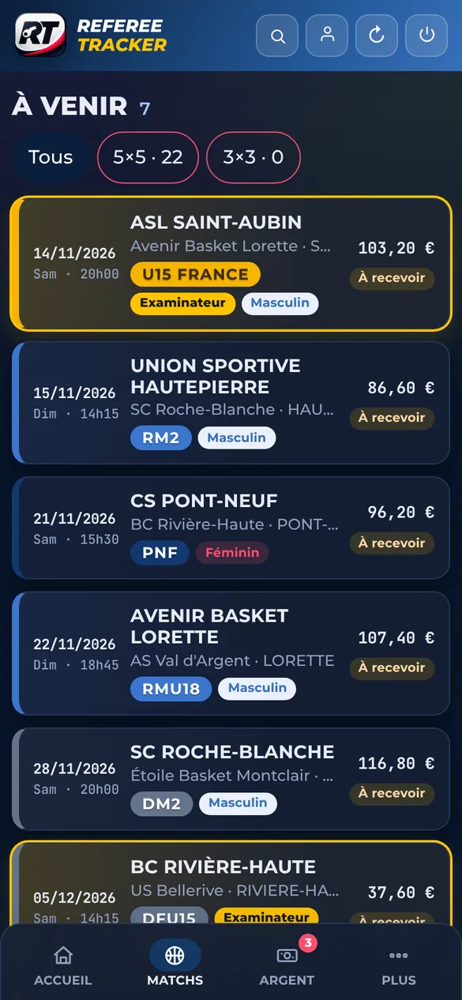
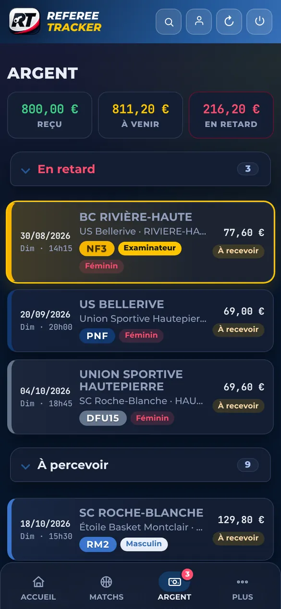
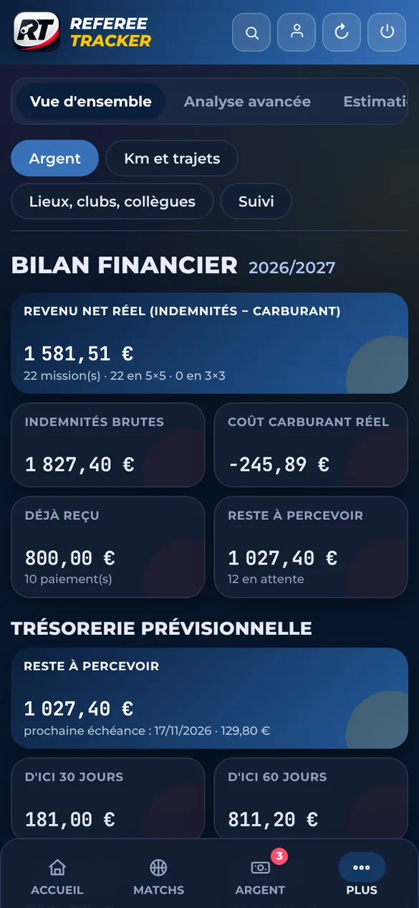
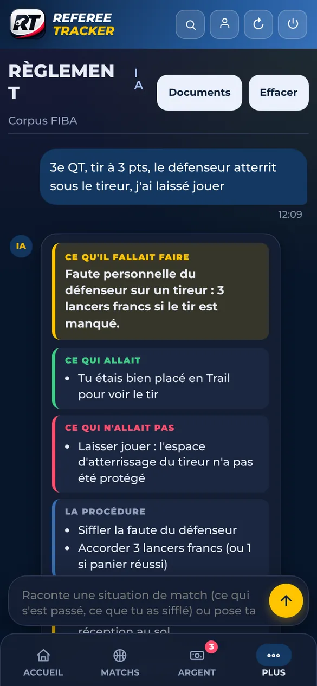
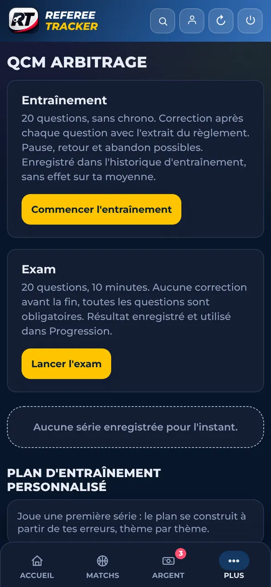
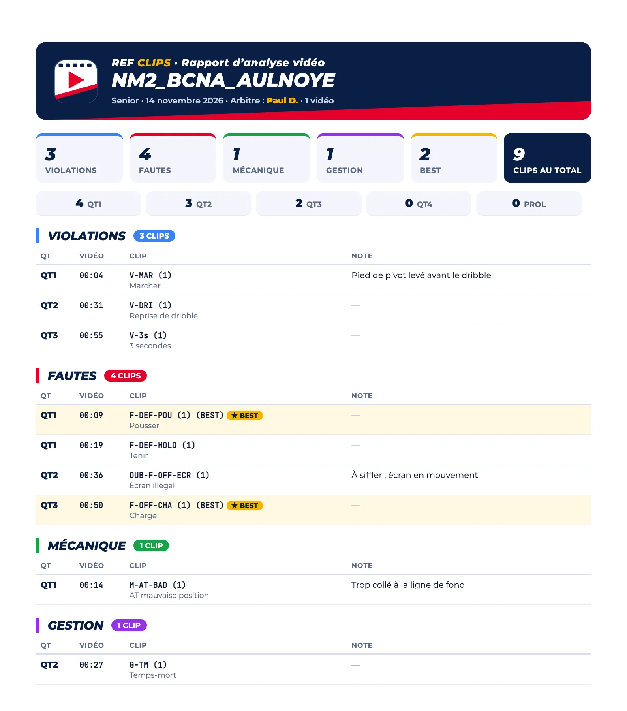
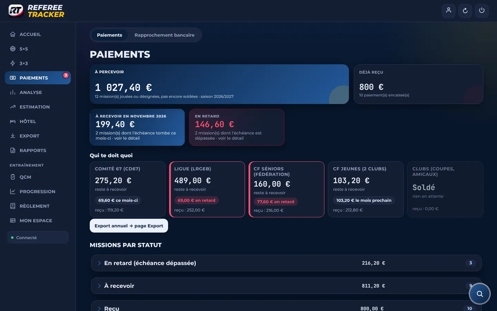

1
You set up a forwarding rule
In Gmail, Outlook or Orange, a rule sends every appointment to your address firstname@referee-tracker.fr. Two minutes, once and for all. A 3x3 appointment comes from an organiser? Just forward the e-mail, that's it.
Appointments, mileage, match fees, payments: it all happens on its own. You forward your appointment e-mails. Referee Tracker creates every match, works out your fee to the cent, tracks who owes you what and reminds you at the right time. The tracking software built for basketball referees. No more spreadsheets: zero typing.




Real app screens (made-up data; the app is shown in French). Tap a tab or let it play.


Your game was filmed? REF CLIPS helps you break it down. You watch the video, type the call on your keyboard, and the moment is tagged in a second. At the end, the app cuts every play into a clip, ready to review or send to your coach.



You keep receiving your appointments as you do today. You forward them, the app does the rest all season.
In Gmail, Outlook or Orange, a rule sends every appointment to your address firstname@referee-tracker.fr. Two minutes, once and for all. A 3x3 appointment comes from an organiser? Just forward the e-mail, that's it.
Date, meeting time, venue, teams, level, your role, your partner. Changes and cancellations update the match on their own.
Mileage from your home, fee from the official scale, expected payment date, a reminder the day before and an alert if a payment is late.
Move the sliders. The app does this for every game, with your fee scale, your real mileage and your car.
Example only: the fixed fee and mileage rate depend on your committee, your league and the level of the game. How it's calculated
Read automatically, including changes, postponements and cancellations. For 3x3, just forward the tournament e-mail: the app finds the venue, your slot and your fee.
Fixed fee and round-trip mileage from your address, using your fee scale.
Every payer, their expected payment date, their delays. Mark a payment as received in one tap.
Your games in Apple Calendar, Google Calendar or Outlook, always up to date.
New game, cancellation, time to leave, late payment.
Analysis of your game situations and practice tailored to your mistakes.
Game, teams and number taken from the appointment. You write, the app lays it out.
Assessments, areas to work on and standings of the teams you referee.
What you do by hand today, Referee Tracker does while you referee.
Without Referee Tracker
≈ 2 h a month
With Referee Tracker
0 typing
The committee sends you one bulk transfer with no details. You enter who paid you and how much: Referee Tracker finds the exact combination of games. If the payer rounded a mileage amount, the app explains it and remembers it for next time.
Describe the situation as you lived it. The assistant rebuilds the facts, gives the call in a few words, then the rule and the articles. It relies only on the official 5×5 and 3×3 rules. If a detail is missing, it asks you instead of guessing.
Two games at the same venue? Only one round trip. Car-sharing or train? The app adapts the calculation. A late game far away? It suggests a hotel. And at year end, it tracks the referees' tax allowance so you're not caught out.
Referee Tracker speaks your language: committees, leagues, national championships, 3×3 tournaments, fee scales and mileage allowances. It's built on the court, season after season, with active referees.
Same account, same data: detailed insights, yearly export, reports.



No connection to your e-mail account: only the e-mails you forward reach the app.
Data isolated per referee, passwords of at least 12 characters.
Database in the European Union, encrypted connections, encrypted backup every night.
No bank details. Export or deletion on request: rgpd@referee-tracker.fr.
What a tracking tool does for a basketball referee, in 5x5 and 3x3.
Payers, schedules, bulk transfers and delays: know who owes you what.
Fixed fee, round-trip mileage and the real cost of the trip, with a calculator.
Review your games, cut clips and prepare a report with REF CLIPS.
No, never. You forward your appointments yourself (or set up an automatic forwarding rule) to your Referee Tracker address. The app only sees what you send it.
They work too. 3x3 appointments often come from an organiser or the committee: just forward the e-mail to your Referee Tracker address. The app reads the event, the venue, your slot (half day or full day) and the fee, then works out your mileage. Your tournaments appear with your 5x5 games, in payments and in insights.
Referee Tracker is a tracking app built for basketball referees: it reads your appointments, creates your games, works out your mileage and fees, tracks your payments and helps you improve (rules, quizzes, video analysis with REF CLIPS).
In the European Union, encrypted in transit, visible only to you. Details in the privacy policy (in French).
They are calculated from your committee's, league's and federation's fee scales and your real mileage. The official appointment remains the reference. How the fee is calculated.
No: the app runs in your phone's or computer's browser and can be added to your home screen like an app, with notifications.
The video analysis app from the Referee Tracker family, for Mac and Windows. You tag your calls while watching your game, the app turns them into clips and a report. It opens with your Referee Tracker account. All about REF CLIPS.
No. Referee Tracker is an independent project, created by a referee, not affiliated with any basketball body.
Request access: we set up your account for your area and level, and you receive your first sign-in code by e-mail.
Request my access